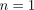
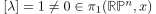

borsuk-ulam theorem
1. Proposition
Let be a continuous map. Then there exists an such that
2. Proof
2.1. by singular homology
Assume that for arbitrary it holds, that
Then the map
is continuous and satisfies

Thus  is an equivariant map with respect to
is an equivariant map with respect to
2.1.1. 
Note that  is connected, hence by image of a connected set connected is connected.
But since is -equivariant, we conculde, that , contradiction
is connected, hence by image of a connected set connected is connected.
But since is -equivariant, we conculde, that , contradiction
2.2. by singular cohomology
Suppose for all .
Assume that 
Consider
Then
Hence there exists an induced map
2.2.1. effect on
Let  (cf. fundamental group of a real projective space) at a basepoint 
Let be the lift. Then by <lift to same basepoint iff homotopy equiv> lifting theorem for a covering we conclude that
and therefore
Therefore
This shows that
is an isomorphism
using the universal coefficient Theorem for cohomology this refines to an isomorphism
Let be the nonzero element
such that

Then as is multiplicative